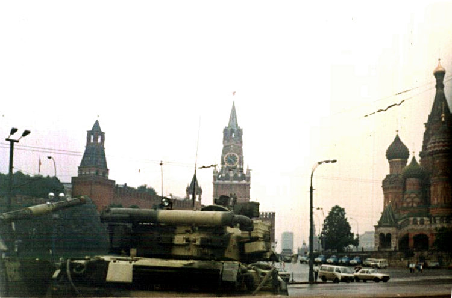

A42-POL-044 // HISTORICAL CLAIM REVIEW
The August 1991 Soviet Coup Attempt
Assessment: A hard-line coup was organized and attempted by senior Soviet officials, with high-confidence documentation.


The precise allegation
Hard-line Soviet officials formed the State Committee on the State of Emergency and detained Mikhail Gorbachev, attempting to halt reforms and preserve the USSR. This was a documented coup, not a claim of a hidden Western plot. Disputes concern how much Gorbachev knew beforehand, whether he could have resisted, and the extent to which the coup hastened the Union's collapse.
Chronology and political context
On August 19, 1991, committee members announced emergency rule, sent troops into Moscow, and isolated Gorbachev at his Crimea residence. Boris Yeltsin led resistance from the Russian parliament building. The putschists lacked decisive force and public legitimacy; after three days they abandoned the effort. Gorbachev returned, but republics accelerated independence and the USSR dissolved in December.
Primary historical record
Committee declarations, Gorbachev's communications, military movements, televised addresses, and parliamentary records document the takeover attempt. Russian and Soviet archives opened some materials after the collapse, though access and preservation were uneven. The coup leaders' later trials and memoirs provide testimony but are self-interested and do not resolve every question of foreknowledge.
Corroboration and contrary evidence
The plotters publicly admitted their actions, and independent footage and troop deployments corroborate the coup. Historians differ over whether Gorbachev was entirely surprised or had tolerated the emergency committee's formation to pressure republic leaders. No persuasive evidence shows the coup itself was staged by Yeltsin or Western governments, despite their political advantage from its failure.
What remains uncertain
The military's willingness to fire, the level of coordination with regional commanders, and Gorbachev's prior knowledge remain debated. The committee's rapid failure makes its exact counterfactual prospects unknowable. A coup can be genuine yet poorly planned; its failure does not imply it was a theatrical operation.
Calibrated verdict
A hard-line coup was organized and attempted by senior Soviet officials, with high-confidence documentation. Claims of an internal Gorbachev-Yeltsin staged operation are unsupported. The coup's defeat accelerated existing political fragmentation, but the Soviet breakup had multiple structural and republican causes and cannot be attributed solely to three days in Moscow.
What evidence could change this assessment
Authenticated pre-August minutes, full communications logs, or independent testimony from military commanders could resolve Gorbachev's knowledge and the plan's operational depth. Evidence that Yeltsin's circle coordinated the committee would change the staged-coup claim; current records instead show real opposition and real risk.
Sources and source limits
- Wilson Center Digital Archive — Soviet coup documentsContains translated Soviet records and historical documents; coverage varies and does not substitute for complete Russian archives.
- National Security Archive — The August CoupPublishes declassified documents and contextual analysis; US archival collection reflects access limits and selection.
- Encyclopaedia Britannica — Soviet coup attempt of 1991Concise historical overview; tertiary source with limited treatment of disputed foreknowledge.